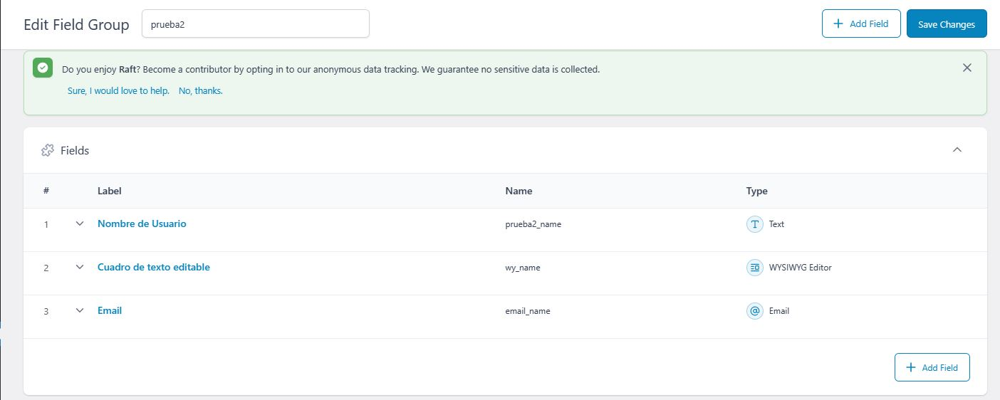
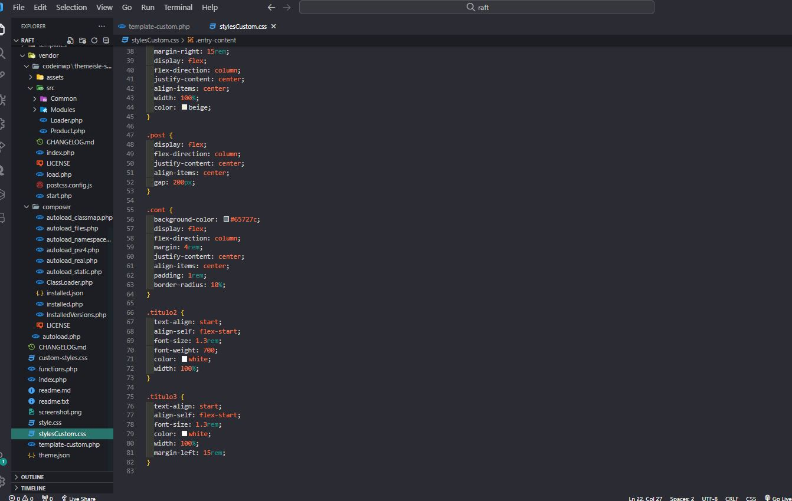
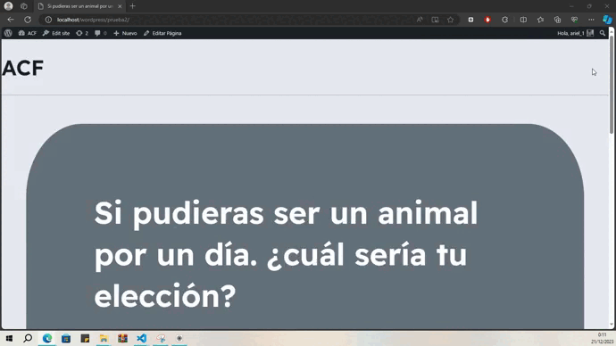

Mi Proceso
¡Bienvenidos! Mi nombre es Ariel Retamales, y les contaré acerca de mi proceso, aprendizaje y experiencia utilizando ACF.
-
Elegí Laragon debido a que ya lo había utilizado en otros proyectos; conozco sus principales funciones y características, por lo que fue sencillo instalar WordPress de manera local. Una vez con WordPress en local, instalé el plugin (Advanced Custom Field) siguiendo todas las indicaciones que aparecían en la página del plugin; el proceso fue rápido y sin ningún problema (hasta el momento).


-
Creé los campos solicitados y los agregué a la sección de página; al editar este componente, pude ver los campos incluidos (Campo de texto y un editor de texto), y por el momento todo marchaba bien.
***Editor WYSIWYG (del inglés "What You See Is What You Get", que significa "lo que se ve es lo que se obtiene") es un tipo de editor HTML que permite modificar la página web en una vista simplificada sin código, similar al diseño de página real.

Al intentar visualizar estos campos en el front es donde se presentó el mayor problema. Por lo que leí en internet y vi en algunos tutoriales, la forma de incluir los campos era a través de una función llamada "get_field"; esta función se incluye en el archivo "principal", por lo general, este archivo lleva como nombre "single.php o home.php". Sin embargo, debido a que cada tema se forma con estructuras diferentes, se me hizo complejo encontrar este archivo. En algunos temas encontré un archivo llamado index.php, pero, se encontraba vacío y con un mensaje "silence is golden", por lo que entendí que es un archivo el cual no se debe modificar.

-
La solución: Al no tener ese archivo de referencia, tuve que crear una plantilla a la que llamé template-custom.php. Luego creé una nueva página en WordPress y le asigné esa plantilla; luego agregué la función dentro de ese archivo y, por fin, pude visualizar los campos en el front.


-
¡Se logró! Ahora toca crear un archivo en CSS y referenciarlo en el archivo PHP para poder editarlo.
 -
Resultado Final
Pensé esta plantilla como el resultado de un cuestionario, además agregué un campo adicional (email) a través de ACF
 -
Reflexiones Finales
A mi parecer creo que ACF es una herramienta bastante poderosa y útil, permite un desarrollo rápido y sencillo. El proceso de instalación es bastante simple y amigable. En un comienzo me costó entender en qué situaciones se utilizaba y de qué forma mostrar los campos en el front (sin duda fue la parte que más me costó entender). A medida que iba interactuando con el plugin comprendí rápidamente que a veces WordPress no es flexible al personalizar campos y este plugin lo soluciona y nos hace más simple la vida.